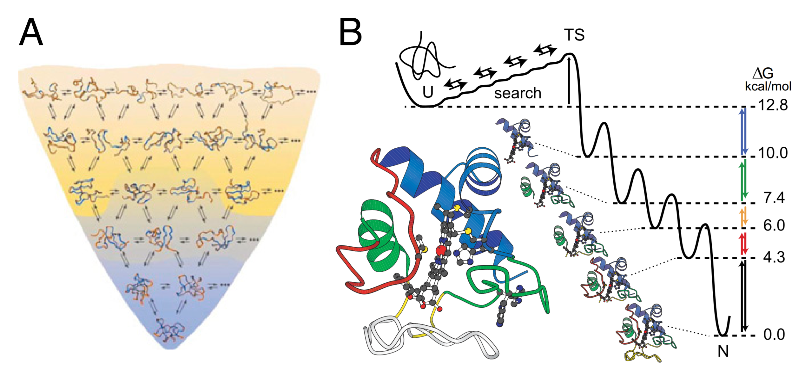
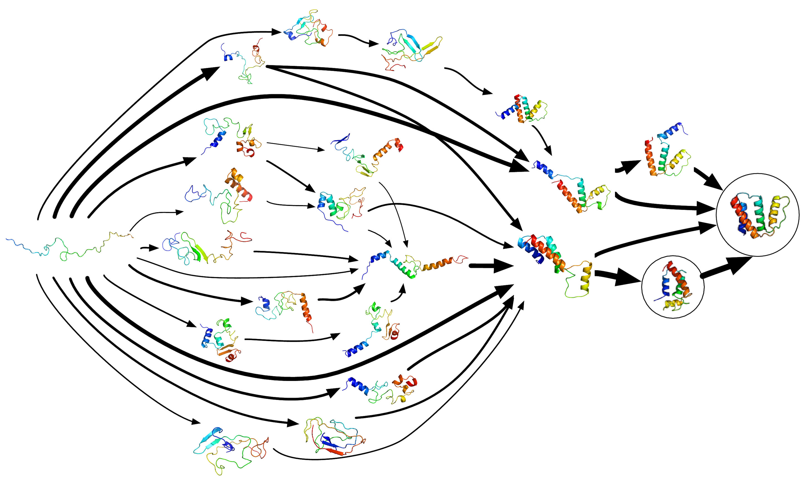
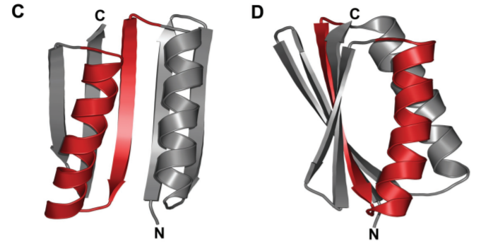

Review session this Wednesday 10/11 from 7-9 pm in Lawrence 115
Some cleanup
The stability of a structure is determined by many offsetting terms
- Folding is driven by:
- Favorable hydrogen bonds (helix makes hydrogen bonds) (enthalpy)
- Hydrophobic effect (a helix has a surface area less than that of the unfolded state) (entropy)
- Folding is opposed by:
- Competing hydrogen bonds with water (enthalpy)
- Loss of conformational entropy
The experimental value for $\Delta H^{\circ\prime}$ is $-41\ kJ\cdot mol^{-1}$. Assuming $8$ hydrogen bonds actually form and that the hydrogen bonds are the main contribution to $\Delta H^{\circ\prime}$, what is each hydrogen bond “worth” in the helix? Why might this be different from the value we used above?
$-41/8 = -5.1\ kJ\cdot mol^{-1}$
Less than $-20\ kJ \cdot mol^{-1}$ because these hydrogen bonds compete with water hydrogen bonds
Key point. You have to consider both unfolded and folded
$\Delta H^{\circ \prime} = \color{blue}{H^{\circ \prime}_{prot-prot}} - \color{red}{H^{\circ \prime}_{prot-water}}$
$\Delta H^{\circ \prime} = \color{blue}{8 \times -25.1} \color{red}{-8 \times -20.0} = -41 \ kJ\cdot mol^{-1}$
$-41 \ kJ\cdot mol^{-1}$ is correct enthalpy to use, not $-5.1$ like I did Friday
How does this play out for $\Delta S$?
From calculation
$\Delta S^{\circ \prime} = Rln(N_{helix}/N_{unfolded})$
$\Delta S^{\circ \prime} = -0.22\ kJ \cdot mol^{-1} K^{-1}$
From experiment
$\Delta G^{\circ \prime} = \Delta H^{\circ \prime} - T \Delta S^{\circ \prime}$
$\Delta G^{\circ \prime} - \Delta H^{\circ \prime} = -T \Delta S^{\circ \prime}$
$\frac{\Delta G^{\circ \prime} - \Delta H^{\circ \prime}}{-T} = \Delta S^{\circ \prime}$
$\Delta S^{\circ \prime} = \frac{-3.5 --41}{-300} = -0.125\ kJ \cdot mol^{-1} \cdot K^{-1}$
It is less entropically unfavorable to collapse helix than you might expect because of the hydrophobic effect
Key point. You have to consider both water and protein
$\Delta S^{\circ \prime}_{helix} = \color{blue}{S^{\circ \prime}_{helix}} - \color{red}{S^{\circ \prime}_{unfolded}}$
$\Delta S^{\circ \prime}_{hphobe} = \color{blue}{S^{\circ \prime}_{folded\ surface}} - \color{red}{S^{\circ \prime}_{unfolded \ surface}}$
$\Delta S^{\circ \prime} = \Delta S^{\circ \prime}_{helix} + \Delta S^{\circ \prime}_{hphobe}$
$-0.125 = -0.22 + \Delta S^{\circ \prime}_{hphobe}$
$0.095 \ kJ \cdot mol^{-1} \cdot K^{-1}= \Delta S^{\circ \prime}_{hphobe}$
Hydrophobic effect makes favorable entropic contribution to folding
Where does $S = Rln(N)$ come from, anyway?
Proline and glycine are both known as "secondary structure breakers"
Why might this be the case?
Proline uses the backbone nitrogen as part of its R-group. No hydrogen bonds + kink
Glycine has a H for an R-group. It's floppy and entropically expensive to immobilize
Disulfide bonds form between ___________ residues. These _________ [covalent|ionic|hydrogen bond] interactions ____________ [stabilize|destabilize] protein structure
Disulfide bonds form between cysteine residues. These covalent interactions stabilize protein structure
The Protein Folding Problem
2017-10-09
Conceptual goals
- Understand that the folded structure of the protein is the free energy minimum for the chain
Skill goals
- Manipulate thermodynamic equations describing protein stability to calculate contributions of different forces
- Reason correctly about interactions by thinking correctly about both sides of a reaction coordinate
- A 100 amino acid protein will have 198 peptide bonds. If each bond can take 3 possible conformations, how many conformations are there?
- If each bond rotates every nanosecond, how long would it take for the protein to sample all possible structures?
- $3^{198} = 3\times 10^{94}$ conformations
- $3\times 10^{94}\ conf \times \frac{1 \times 10^{-9} \ s}{conf} = 3 \times 10^{89} \ s$
- $9 \times 10^{77} years$
Real proteins fold in milliseconds
What does this tell us about protein folding?
Folding does not proceed by random search.
Proteins fold by a biased search.

Previous steps set up next steps
- Local elements fold (like secondary structure) fold
- These folded elements change environment of rest of chain
- Other local parts of the structure fold
- Settles in to a final 3D fold
This is known as a "folding funnel"

We can follow folding directly with Hydrogen-Deuterium Exchange Mass Spectrometry
 Walter EnglanderWe can follow structural intermdiates with molecular dynamics simulations
 Vijay PandeWe can design proteins from scratch
 Brian KuhlmannGeorge Rose is a well-known protein folder at Johns Hopkins
He is giving a seminar at 2 pm today, in Willamette 240.
Fun fact: cookies and coffee at 1:45
Fun other fact: George calls funnels the F-word
Summary
- To understand biochemical reactions, you need to account for both sides of the reaction
- To understand biochemical reactions, you need to account for biomolecules and water
- Proline, Glycine and Cysteine are special amino acids, altering secondary structure (Pro,Gly) or forming covalent bonds (Cys)
- Proteins do not fold randomly, but follow a "folding funnel" to the lowest energy state